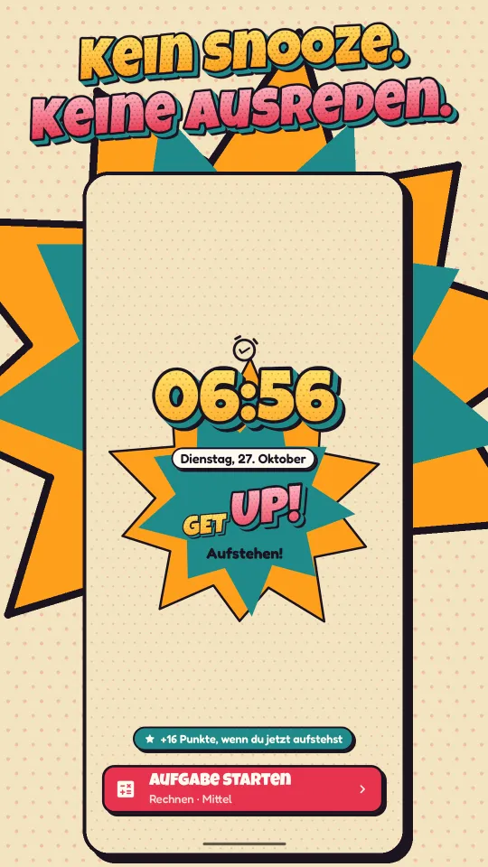
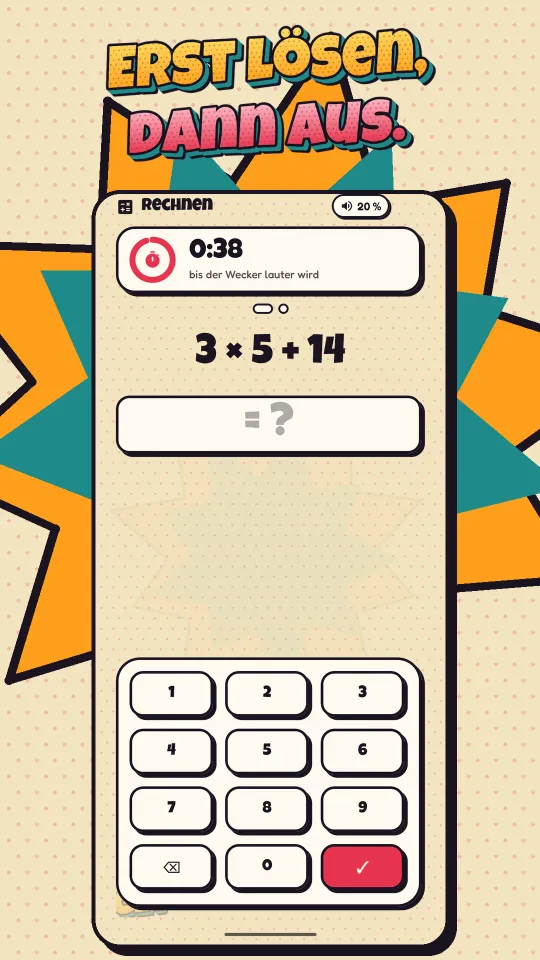
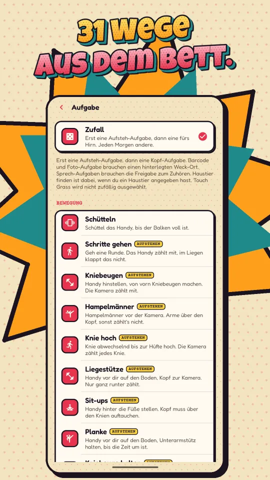
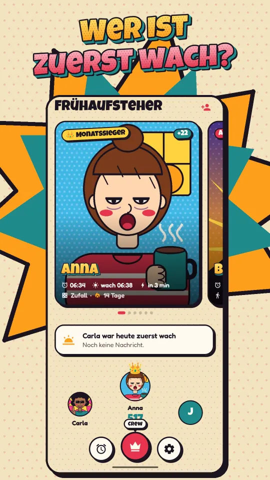
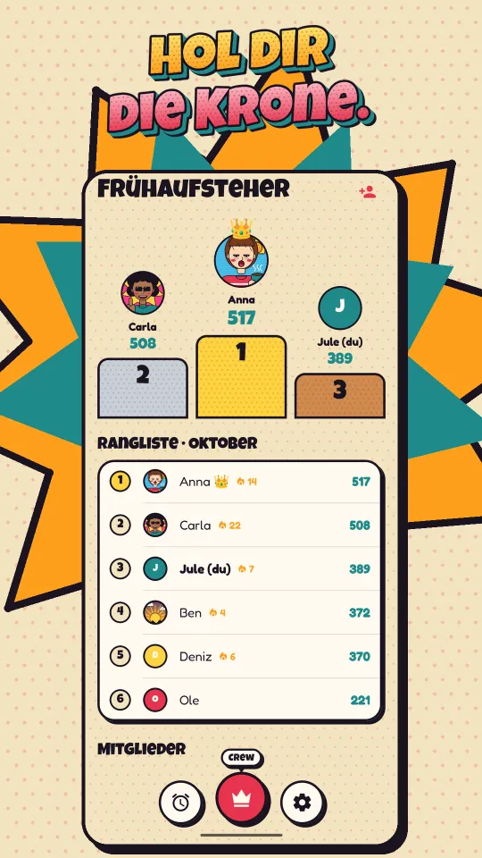
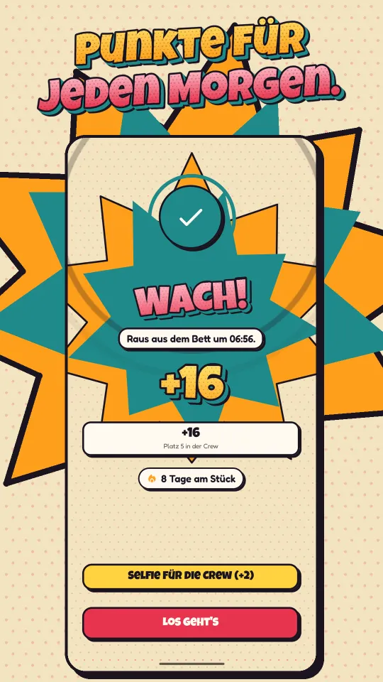

Wecker · iPhone & Android
GET UP!
Der Wecker, der erst Ruhe gibt, wenn du wach bist. Er klingelt, bis du eine Aufgabe gelöst hast: rechnen, Kniebeugen vor der Kamera, das gemachte Bett fotografieren. Kein Snooze, keine Ausreden.






So läuft dein Morgen
31 Aufgaben
Für den Kopf: Rechnen, Bombe entschärfen, Simon sagt, Memory, Flaggen-Quiz. Zum Aufstehen: Kniebeugen, Hampelmänner, Liegestütze, Tanzen – die Kamera zählt mit, direkt auf deinem Handy. Mit Beweisfoto: Bett, Himmel, Barcode. Oder Zufall.
Deine Crew
Gründe eine private Crew und lade Freunde mit einem 6-stelligen Code ein. Wer zuerst wach ist, schickt den anderen eine Sprach- oder Videonachricht und darf ihnen eine Aufgabe zuteilen. Wer den Monat gewinnt, trägt die Krone.
Dein Stil
Über 40 Wecktöne, Meme-Videos mit Ton, animierte Hintergründe oder ein eigenes Foto. Dazu Power-Nap, Wach-Check und eine Erinnerung, wann es Zeit fürs Bett ist.
Für iPhone und Android
iPhone
Ab iOS 26. Klingelt über dem Sperrbildschirm und in der Dynamic Island, auch im Lautlos-Modus. Anmelden mit Apple, Google oder E-Mail.
Stand: im Test über TestFlight, bald im App Store.
Android
Ab Android 8. Klingelt als Vollbild über dem Sperrbildschirm, auch nach einem Neustart. Anmelden mit Google oder E-Mail.
Stand: im Test bei Google Play, bald für alle.
Die Crew funktioniert über beide Systeme hinweg. Get Up Pro schaltet die Aufsteh-Aufgaben, Barcode, Zufall und die Crew frei – als Monatsabo, Jahresabo (für Neukunden mit 7 Tagen gratis) oder Einmalkauf. Ohne Pro bleiben 13 Aufgaben und alle Wecker frei.
Deine Daten
Ohne Konto bleibt alles auf deinem Handy. Wecker, Punkte und Verlauf werden nirgendwohin übertragen. Ein Konto brauchst du nur für die Crew und für Pro auf mehreren Geräten.
Crews liegen in der EU. Ergebnisse und Selfies speichern wir in Frankfurt am Main (Google Firebase, Region europe-west3). Einzelne Morgen werden nach 62 Tagen gelöscht.
Keine Werbung in der App. Nutzungsstatistik und Werbe-Messung (Meta) laufen nur, wenn du zustimmst, und lassen sich in den Einstellungen jederzeit abschalten.
Jederzeit löschbar. Dein Konto löschst du in der App unter Einstellungen → Konto löschen – oder ohne App per E-Mail. So geht’s: Konto löschen.
Die Einzelheiten stehen in der Datenschutzerklärung.
Kontakt
Fragen, Fehler, Wünsche – schreib einfach an support@chasingdreamsinteractive.com.
◂ Ein Projekt von Chasing Dreams Interactive